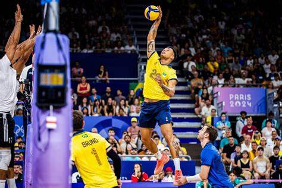

Rebeca

Rebeca Andrade chorou de emoção e alívio, e o Brasil chorou com ela. A estrela mais brilhante do Olimpo brasileiro conquistou o ouro na final do solo na manhã desta segunda-feira (5), na Bercy Arena, em Paris, e se tornou a maior medalhista olímpica do país em todos os tempos. Tudo isso aos 25 anos. Foi um dia de emoção e redenção. Rebeca havia falhado na final de trave menos de uma hora antes e ficado fora do pódio. Mas levantou a cabeça e entregou tudo no tablado, com um solo belíssimo, chegadas praticamente cravadas ao fim de cada acrobacia e as lágrimas de quem sabia que havia encerrado sua participação nas Olimpíadas de Paris com uma apresentação de encantar o mundo todo. Simone Biles fez acrobacias incríveis, mas falhas na execução a deixaram com a medalha de prata. A americana Jordan Chiles ficou com o bronze.
Darlan
Darlan é a nova estrela da Seleção Brasileira masculina de vôlei na disputa das Olimpíadas 2024. O oposto de 22 anos e 1,92m de altura se tornou destaque do Brasil no Pré-Olímpico para os Jogos. Ele foi o maior pontuador da equipe no torneio e sétimo no geral, sendo fundamental para a classificação da equipe à Paris.
Bia
Com a conquista de Bia Souza na categoria acima de 78kg nos Jogos Olímpicos de Paris 2024, nesta sexta-feira (2), o judô obteve a primeira medalha de ouro para o Brasil pela quinta vez na história das Olimpíadas. Nos Jogos Olímpicos de Paris, Beatriz obteve vitórias importantes. Ela venceu Izayana Marenco, da Nicarágua, em sua estreia, e também derrotou Kim Hayun, da Coreia do Sul, nas quartas de final. Na semifinal, enfrentou a francesa Romane Dicko, garantindo sua vaga na final. Na disputa pela medalha de ouro, Beatriz venceu a israelense Raz Hershko.